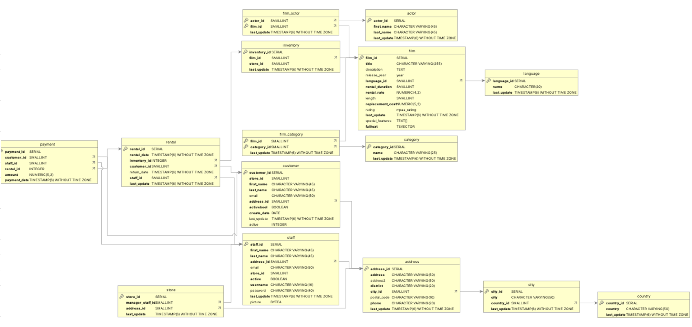
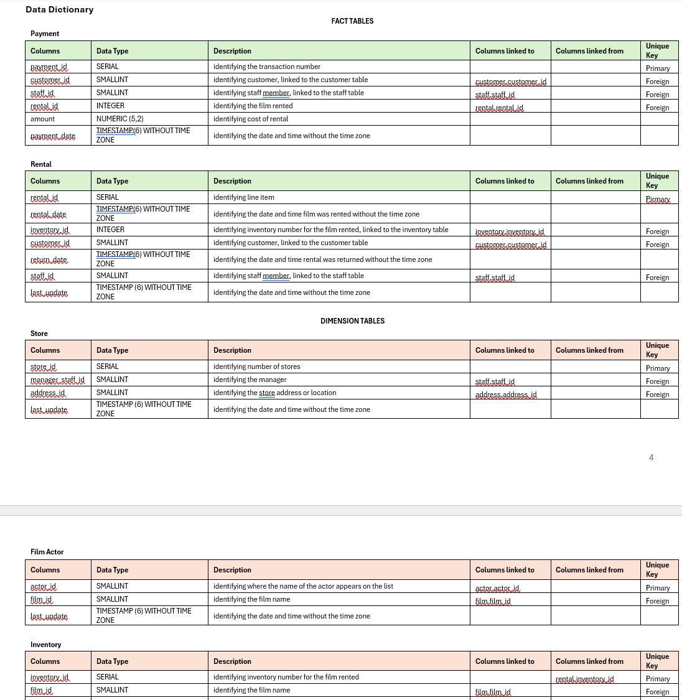
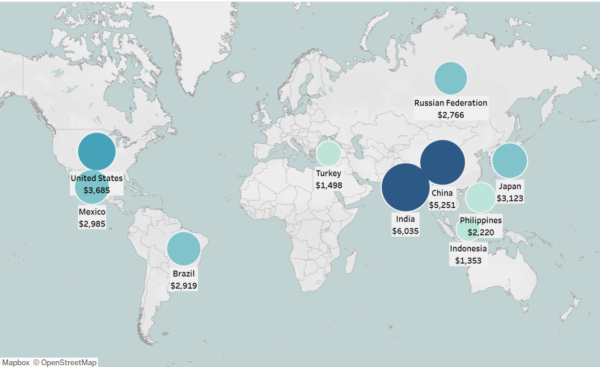
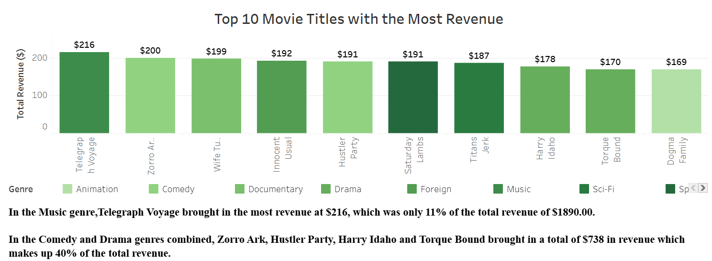
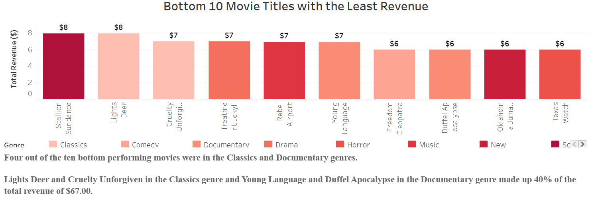
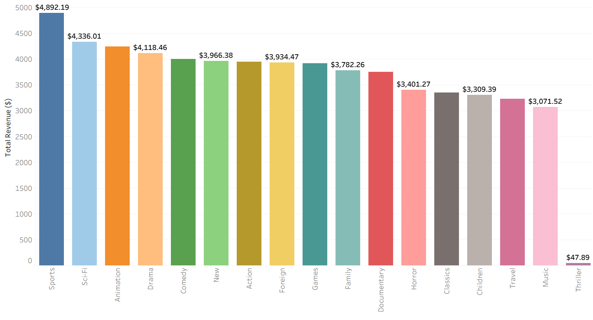

← Back to Projects
Project Overview
Rockbuster Stealth LLC, a traditional movie rental company with stores worldwide, faced intense competition from streaming giants like Netflix and Amazon Prime. As their Business Intelligence Data Analyst, I used SQL and Tableau to analyze rental data and provide strategic insights to guide their 2020 transition to an online video rental service.
🎯 Business Goal:
Help Rockbuster's Management Board make data-driven decisions about their online video service launch by analyzing customer distribution, revenue patterns, rental behavior, and identifying high lifetime value customers across global markets.
SQL
PostgreSQL
Tableau
Database Design
ERD Analysis
Data Visualization
584
Total Active Customers
$61.3K
Total Revenue Analyzed
10
Top Markets Identified
The Business Challenge
Rockbuster Stealth's Management Board needed urgent answers to critical strategic questions before launching their online service:
- Revenue Performance: Which movies contributed the most and least to revenue gain?
- Customer Engagement: What was the average rental duration for all videos?
- Geographic Distribution: Which countries are Rockbuster customers based in?
- High-Value Customers: Where are customers with high lifetime value located?
- Regional Variations: Do sales figures vary significantly between geographic regions?
Data Constraints:
The analysis covered a limited window (February 14 to May 14, 2007) with approximately 3MB of data across multiple related tables. Despite this constraint, I extracted meaningful insights to guide strategic planning.
My Approach
1. Database Setup & Understanding
I began by setting up the PostgreSQL environment and understanding the data structure:
- Installed and configured PostgreSQL database management system
- Loaded the Rockbuster dataset (3MB+ with multiple related tables)
- Analyzed the Entity Relationship Diagram (ERD) to understand table relationships
- Created a comprehensive data dictionary documenting all fields and relationships
- Identified primary and foreign keys across tables: customer, payment, rental, film, inventory, address, city, country

Entity Relationship Diagram showing database structure and table relationships

Data Dictionary documenting table structures, data types, and descriptions
2. Customer Distribution Analysis
I wrote complex SQL queries with multiple INNER JOINs to analyze customer geography:
SELECT D.country, COUNT(A.customer_id) AS customer_count
FROM customer A
INNER JOIN address B ON A.address_id = B.address_id
INNER JOIN city C ON B.city_id = C.city_id
INNER JOIN country D ON C.country_id = D.country_id
GROUP BY D.country
ORDER BY customer_count DESC
LIMIT 10;
Key Finding: India led with 60 customers, followed by China (53) and United States (36). The top 10 countries represented 315 customers—53% of the total customer base.
3. Revenue Analysis by Country
I analyzed revenue patterns across geographic regions to identify high-value markets:
SELECT e.country, SUM(a.amount) AS total_revenue
FROM payment a
INNER JOIN customer b ON a.customer_id = b.customer_id
INNER JOIN address c ON b.address_id = c.address_id
INNER JOIN city d ON c.city_id = d.city_id
INNER JOIN country e ON d.country_id = e.country_id
GROUP BY e.country
ORDER BY total_revenue DESC
LIMIT 10;
Key Finding: India generated the highest revenue ($6,035), followed by China ($5,251) and United States ($3,685). The top 3 countries contributed $14,971 (47% of top 10 revenue, 24% of total revenue).

Geographic visualization showing revenue distribution across top 10 countries
4. Rental Duration Analysis
I investigated whether rental duration varied by content type to understand customer engagement:
-- By Rating
SELECT D.rating AS Rating,
AVG(B.return_date - B.rental_date) AS avg_rental_duration
FROM rental B
INNER JOIN inventory C ON B.inventory_id = C.inventory_id
INNER JOIN film D ON C.film_id = D.film_id
GROUP BY D.rating
ORDER BY avg_rental_duration DESC;
-- By Genre
SELECT c.name AS Genre,
AVG(r.return_date - r.rental_date) AS avg_rental_duration
FROM rental r
INNER JOIN inventory i ON r.inventory_id = i.inventory_id
INNER JOIN film f ON i.film_id = f.film_id
INNER JOIN film_category fc ON f.film_id = fc.film_id
INNER JOIN category c ON fc.category_id = c.category_id
GROUP BY c.name
ORDER BY avg_rental_duration DESC;
Key Finding: Average rental duration was consistently around 5 days across all ratings and genres, suggesting uniform customer behavior regardless of content type.
5. Revenue Performance by Movie Title
I identified top and bottom performing titles to guide content strategy:
-- Top 10 Revenue Generating Films
SELECT D.title,
SUM(A.amount) AS Total_Revenue
FROM film D
INNER JOIN inventory C ON D.film_id = C.film_id
INNER JOIN rental B ON C.inventory_id = B.inventory_id
INNER JOIN payment A ON B.rental_id = A.rental_id
GROUP BY D.title
ORDER BY Total_Revenue DESC
LIMIT 10;
Top Performers: Telegraph Voyage ($215.75), Zorro Ark ($199.72), and Wife Turn ($198.73) led revenue generation.

Top 10 movie titles generating the highest revenue, with genre breakdown
Bottom Performers: Stallion Sundance ($7.94), Lights Deer ($7.93), and Cruelty Unforgiven ($6.94) generated the least revenue.

Bottom 10 movie titles with the least revenue, showing genre concentration in Classics and Documentary
6. Genre Performance Analysis
I analyzed revenue distribution across Rockbuster's 17 movie genres to identify content priorities:
Top-Performing Genres: Sports ($4,892), Sci-Fi ($4,336), and Animation ($4,118) were the top three revenue generators, collectively accounting for $13,473—approximately 22% of total revenue ($61,312). These genres demonstrated consistent customer appeal and should be prioritized for the online platform.

Total revenue distribution across all 16 genres, revealing clear performance tiers
Key Findings & Insights
Finding #1: Customer Concentration in Emerging Markets
India, China, and United States represented 25% (149 of 584) of total customers. However, India's 60 customers alone generated over $6,000 in revenue, demonstrating strong market potential in emerging economies.
Finding #2: Revenue Concentration Patterns
The top 10 countries contributed $31,834 (52% of total $61,312 revenue), while the bottom 3 performers (Indonesia, Turkey, Philippines) generated only $5,071 (8% of total). This concentration indicates where to focus initial launch efforts.
Finding #3: High-Value Countries
Prioritize high revenue generating countries: India, China, and United States. Of the total number of active customers, 584, approximately 25% or 149 customers live in the top 3 countries. A total of 315 customers live in the top 10 countries, which is 54% of the total active customer base at Rockbuster.
Finding #4: Consistent Rental Behavior
The 5-day average rental duration across all genres and ratings suggests customers have predictable viewing habits, which can inform pricing models and content rotation strategies for the online service.
Total revenue distribution across all 17 genres, revealing clear performance tiers
Challenges & Solutions
Challenge 1: Limited Time Window
Problem: Data covered only a 3-month period (Feb-May 2007), making it difficult to identify seasonal trends or annual patterns.
Solution: Focused on relative performance within the available timeframe and clearly documented this limitation in recommendations. Advised management that accessing a full year of current data would enable more robust seasonal analysis and better forecast accuracy.
Challenge 2: Complex Multi-Table Joins
Problem: Extracting customer geography required joining 4 tables (customer → address → city → country), while revenue analysis needed 5 tables (payment → customer → address → city → country).
Solution: Carefully mapped the ERD relationships, validated each join step to prevent data loss, and used INNER JOINs to ensure data integrity. Created reusable query templates for common join patterns to improve efficiency.
Challenge 3: Data Quality Validation
Problem: With multiple related tables, ensuring data consistency and avoiding duplicate records was critical.
Solution: Implemented validation checks using COUNT(DISTINCT) to verify customer and transaction counts at each query stage. Documented all assumptions and validated results against known totals.
Challenge 4: Actionable Insight Generation
Problem: Management needed clear, actionable recommendations, not just data outputs.
Solution: Translated SQL results into business language, created Tableau visualizations for executive presentation, and structured recommendations around specific markets, content titles, and strategic priorities.
Strategic Recommendations & Business Impact
Based on my comprehensive SQL analysis, I provided Rockbuster's Management Board with these actionable recommendations:
🎬 Content Strategy: Prioritize High-Performers
- Launch with Winners: Feature the 5 top revenue-generating titles (Telegraph Voyage, Zorro Ark, Hustler Party, Harry Idaho, Torque Bound) prominently on the online platform—they drove 51% of top-tier revenue
- Genre Focus: Emphasize Comedy and Drama titles, which showed strong combined performance
- Phase Out Underperformers: Consider deprioritizing or eliminating Classics and Documentary genres that contributed minimal revenue
🌍 Geographic Market Strategy
- Phased Launch Approach: Launch first in India, China, and United States—markets with both high customer concentration (25% of base) and revenue generation (24% of total)
- City-Level Targeting: Within India, 5 cities generated 70% of country revenue—focus infrastructure and marketing investments in these high-density urban areas
- Growth Market Development: Replicate successful strategies from top 3 markets in underperforming regions (Indonesia, Turkey, Philippines) to unlock untapped revenue potential
👥 Customer Engagement & Loyalty
- High-Value Customer Programs: Implement targeted loyalty programs for customers in top 10 countries (53% of customer base) to maximize retention
- Lifetime Value Focus: Develop VIP tiers for high-spending customers identified in the analysis to increase engagement and referrals
- Regional Personalization: Create market-specific content recommendations based on observed regional preferences
📊 Data Infrastructure for Future Success
- Expand Data Collection: Implement systems to capture full-year, current data to identify seasonal trends and improve forecasting accuracy
- Real-Time Analytics: Build dashboards to monitor KPIs (customer acquisition, churn, revenue per user) as the online service launches
- Competitive Intelligence: Gather competitor pricing, content library, and promotional data from Netflix, Amazon Prime, and regional players
- Sentiment Analysis: Collect and analyze customer feedback, reviews, and social media mentions to understand preferences and pain points
Expected Business Impact:
These recommendations position Rockbuster to capture 70%+ of revenue potential from proven markets and content, while building infrastructure for long-term competitive advantage in the online video rental space.
Personal Growth:
This project significantly strengthened my SQL proficiency, particularly in multi-table joins, aggregate functions, and translating complex queries into executive-level insights. I learned how to balance analytical rigor with business storytelling, ensuring technical findings drive actionable decisions for C-suite stakeholders.
What I Would Do Differently: With additional time and resources, I would implement advanced analytics including customer cohort analysis to track behavior over time, predictive modeling to forecast churn risk, and A/B testing frameworks to optimize pricing strategies for different market segments.
Technical Approach Highlights
SQL Techniques Mastered
- Complex Joins: INNER JOIN across 5+ tables with proper foreign key relationships
- Aggregation: SUM, COUNT, AVG with GROUP BY for revenue and customer metrics
- Filtering: WHERE clauses for targeted analysis and data quality checks
- Sorting: ORDER BY with DESC for ranking top/bottom performers
- Limiting Results: LIMIT for focused top-N analysis
- Date Calculations: return_date - rental_date for rental duration metrics
- Subqueries: Nested SELECT statements for complex business questions
Sample Queries from Analysis
-- Customer Distribution by Country (Top 10)
SELECT D.country, COUNT(A.customer_id) AS customer_count
FROM customer A
INNER JOIN address B ON A.address_id = B.address_id
INNER JOIN city C ON B.city_id = C.city_id
INNER JOIN country D ON C.country_id = D.country_id
GROUP BY D.country
ORDER BY customer_count DESC
LIMIT 10;
-- Total Revenue by Country (Top 10)
SELECT e.country, SUM(a.amount) AS total_revenue
FROM payment a
INNER JOIN customer b ON a.customer_id = b.customer_id
INNER JOIN address c ON b.address_id = c.address_id
INNER JOIN city d ON c.city_id = d.city_id
INNER JOIN country e ON d.country_id = e.country_id
GROUP BY e.country
ORDER BY total_revenue DESC
LIMIT 10;
Visualization Tools
- Tableau Public: Created interactive dashboards showing geographic revenue distribution, top performing titles, and customer concentration
- Executive Presentation: Designed clear, visually compelling slides with key metrics and strategic recommendations
- Data Dictionary: Documented database structure in Excel for technical colleagues